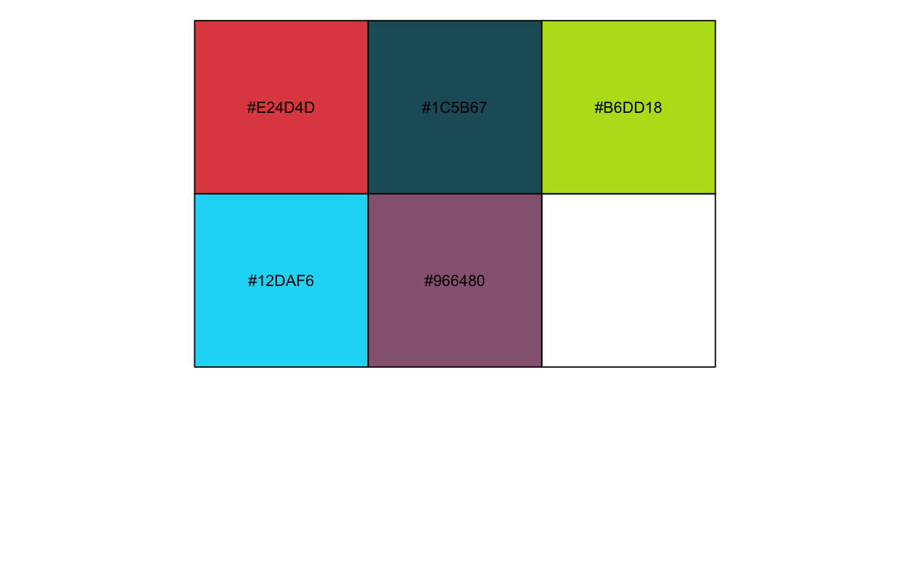
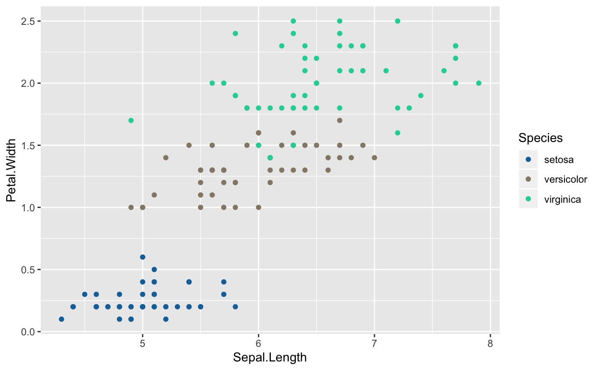
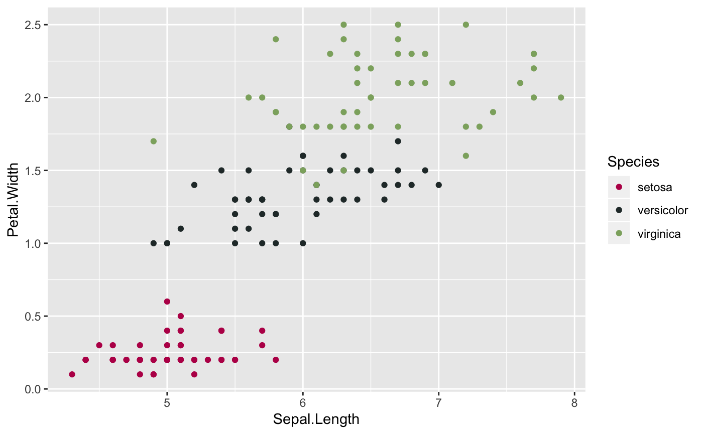
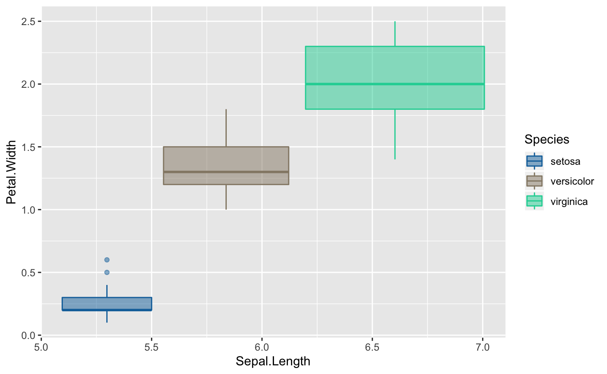
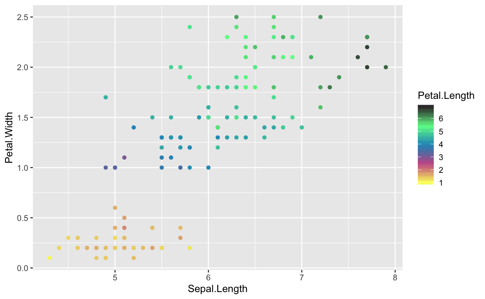
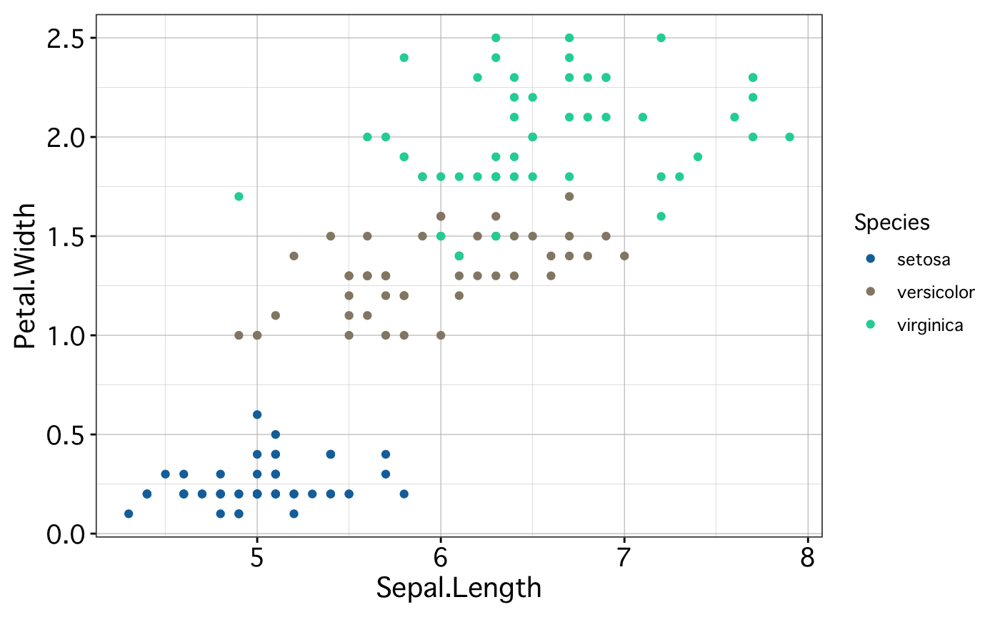
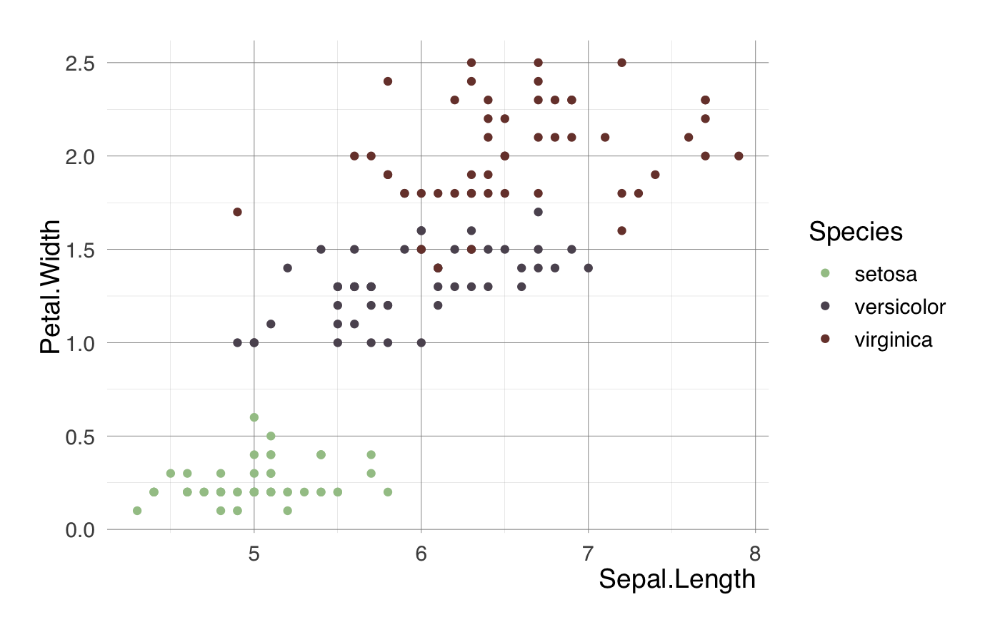
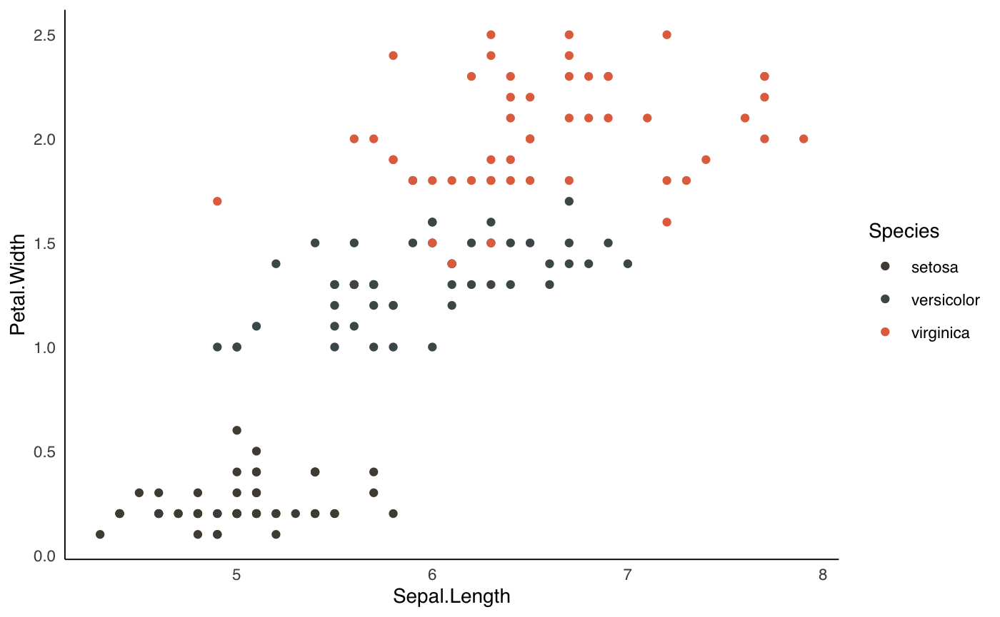

The fishpals package provides fish-inspired color palettes and some lightweight ggplot themes that we hope will be especially useful to scientists when preparing reports, presentations, and publications.
fishpals into Rfishpals is a pretty trivial package, so it’s unlikely it will ever be submitted to CRAN. You can install the fishpals package using either devtools::install_github() or the install_github function from the remotes package:
To see all the palettes included in the fishpals package, use getpals():
getpals()
#> [1] "adultchinook" "adultsteelhead" "cfs" "genidaqs"
#> [5] "greensunfish" "juvsteelhead" "surgewrasse"To view a particular palette, call it by name with viewpals()

To see a full list of all the colors in each palette, use get_fishpals_cols():
get_fishpals_cols()
#> juvsteel green juvsteel taupe
#> "#A3C595" "#BA8F78"
#> juvsteel grey juvsteel jungle green
#> "#5D5360" "#1c240d"
#> juvsteel tuscan red adultsteel dark liver
#> "#784039" "#504C41"
#> adultsteel red ochre adultsteel gray
#> "#E2704D" "#B8BABD"
#> adultsteel feldgrau adultsteel spanish bistre
#> "#4B5859" "#707239"
#> chinook red chinook blue
#> "#BA1D57" "#0C4FA0"
#> chinook dark gray chinook pink
#> "#273535" "#EFB0A1"
#> chinook olive sunfish green
#> "#8DAD6E" "#4EC4B8"
#> sunfish tan sunfish yellow
#> "#8C7A4B" "#F1B24A"
#> sunfish gray sunfish dark gray
#> "#636271" "#2D3040"
#> CFS blue CFS dark gray
#> "#1372AA" "#3B4856"
#> CFS gridlines CFS tan
#> "#9FADBD" "#8B662E"
#> CFS light tan CFS teal
#> "#C3985E" "#1CD2A3"
#> genidaqs yellow genidaqs blue
#> "#FAFF6B" "#2597C4"
#> genidaqs brown genidaqs green
#> "#3A3737" "#6CFC95"
#> genidaqs pink surgewrasse orange
#> "#CA5B97" "#E24D4D"
#> surgewrasse teal surgewrasse green
#> "#1C5B67" "#B6DD18"
#> surgewrasse blue surgewrasse purple
#> "#12DAF6" "#966480"scale_*_fishpals() functionsfishpals is designed to integrate with ggplot2 code, and so provides two ggplot2 scale functions for displaying its custom color palettes. To use them, map a variable to a color aesthetic and call the appropriate scale function: scale_fill_fishpals() or scale_color_fishpals():
ggplot(iris, aes(x = Sepal.Length, y = Petal.Width)) +
geom_point(aes(color = Species), size = 1.5) +
scale_color_fishpals()
The default color palette is “cfs”. To use a different one, just call it by name:
ggplot(iris, aes(x = Sepal.Length, y = Petal.Width)) +
geom_point(aes(color = Species), size = 1.5) +
scale_color_fishpals("adultchinook")
Both scales can be called in the same plot:
ggplot(iris, aes(x = Sepal.Length, y = Petal.Width)) +
geom_boxplot(aes(color = Species, fill = Species),
width = 0.5,
alpha = 0.5) +
scale_fill_fishpals() +
scale_color_fishpals()
By default, the discrete parameter is set to TRUE, that is, the colors will be discrete until the number of colors required exceeds the available base colors in the plot (typically 5 or 6). If your variable requires more colors than that, a continuous palette can be generated from the base pallette by setting discrete = FALSE:
ggplot(iris, aes(x = Sepal.Length, y = Petal.Width)) +
geom_point(aes(color = Petal.Length)) +
scale_color_fishpals("genidaqs", discrete = FALSE)
theme_*() functionsfishpals comes with three themes: theme_report(), theme_pres(), and theme_pub(). These themes are designed to suppor the three formats that scientists typically use for communication (reports, presentations, and publications).
theme_report() has defaults that translate well to written reports and knitting to Word documents. It has some additional optional arguments that allow for showing or hiding some common customizations (outer border, inner border, and they way they look).
ggplot(iris, aes(x = Sepal.Length, y = Petal.Width)) +
geom_point(aes(color = Species), size = 1.5) +
scale_color_fishpals() +
theme_report(inner_border = TRUE, outer_border = TRUE)
theme_pres() has defaults that should help you out when you have to ggsave() a plot for a presentation - larger default fonts, etc. I’m working on a dark presentation theme, stay posted.
ggplot(iris, aes(x = Sepal.Length, y = Petal.Width)) +
geom_point(aes(color = Species), size = 1.5) +
scale_color_fishpals("juvsteelhead") +
theme_pres()
theme_pub() has some default options often used in publications:
ggplot(iris, aes(x = Sepal.Length, y = Petal.Width)) +
geom_point(aes(color = Species), size = 1.5) +
scale_color_fishpals("adultsteelhead") +
theme_pub()